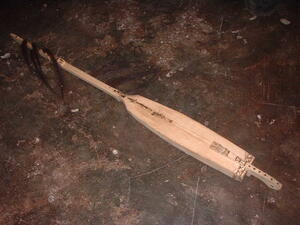
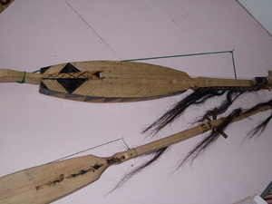
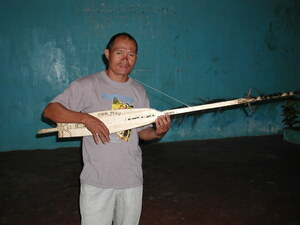

kuglung   
/kugluŋ/
n.
“two-stringed_lute”
n.
a two-stringed lute
Wrd.Gloss: two-stringed_lute
Cult. One string is a drone. The other has frets forming a pentatonic scale. This instrument is usually played by men. It is usually made from banuwaley wood.
Eng. two-stringed guitar; guitar; lute; instrument variety
OCM: Musical Instruments (534)
Online dict status: -
Usage level: F
vi.
for someone (usually a male) (egpanguglung, impanguglung/migpanguglung, agent, agent, eg><ø-paN-) to play the two-stringed lute
Mateles-teles naan dè iya egpanguglung si Karsiten.
Karsiten is very good player of kuglung instrument.
Eng. play kuglung lute; lute, play
Online dict status: -
Usage level: M
Updated by: RJH
Last updated: 20/Oct/2009
"kuglung" in text "Violence at Palakpakan Fiesta"
This page last updated: 19/May/2012
Copyright © 2009-2010, Matigsalug Language Christian Association, Inc